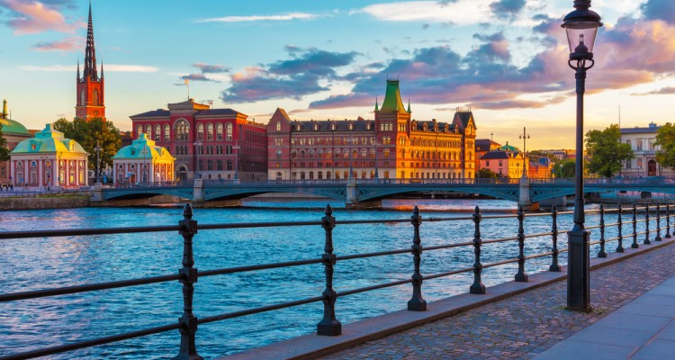
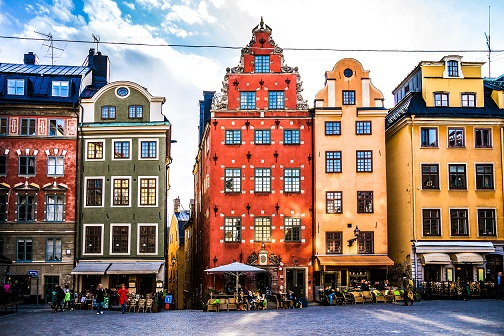
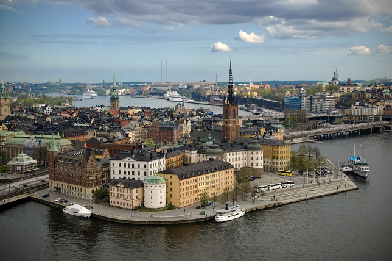
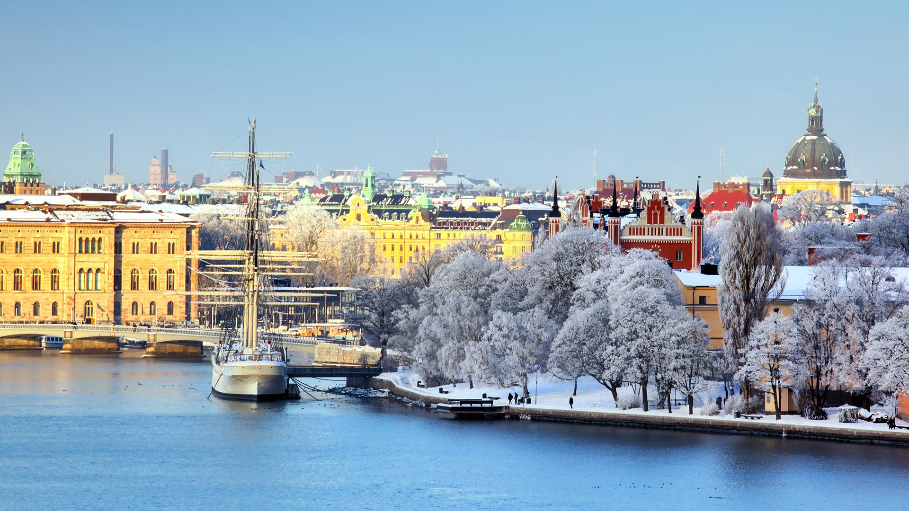
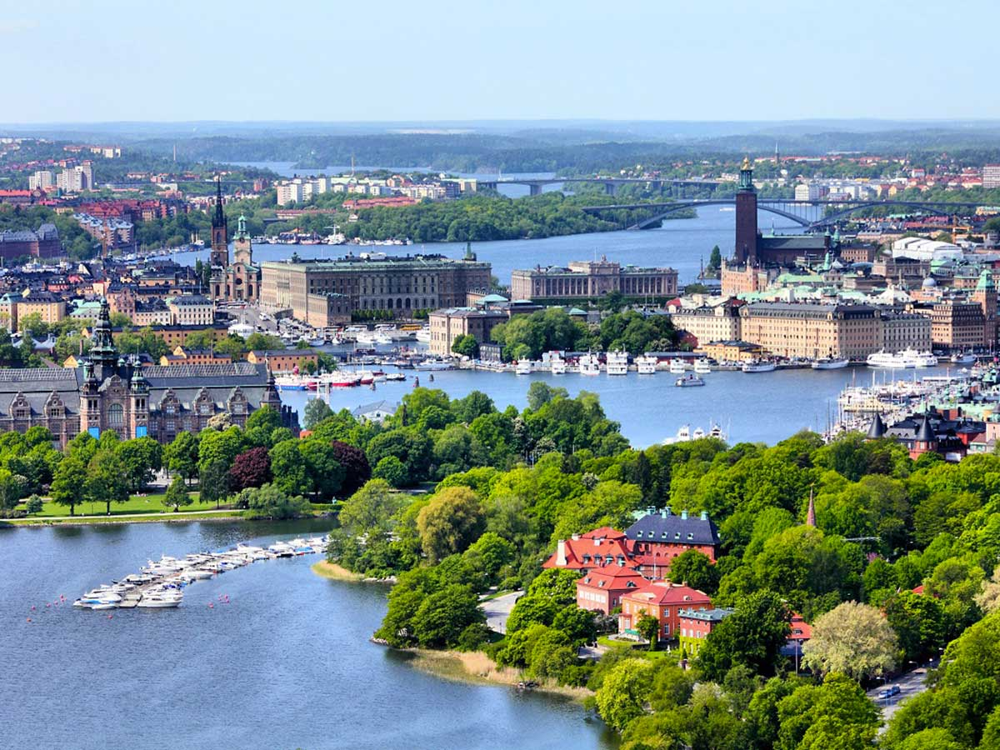
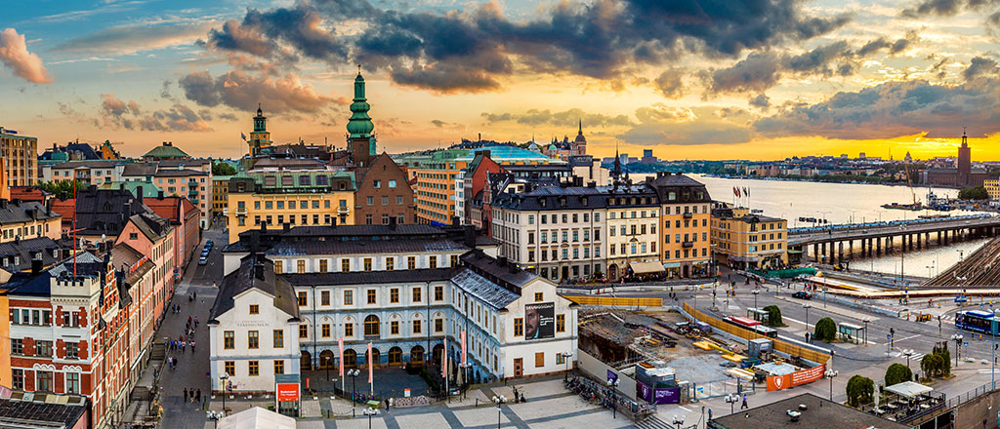
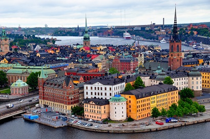
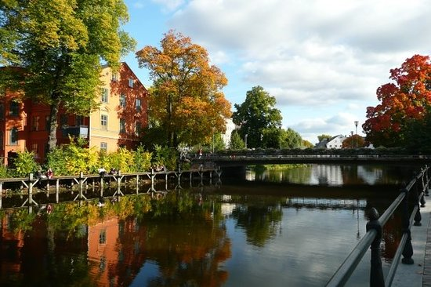
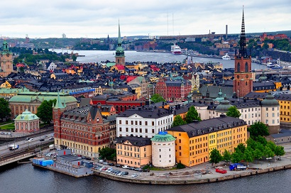
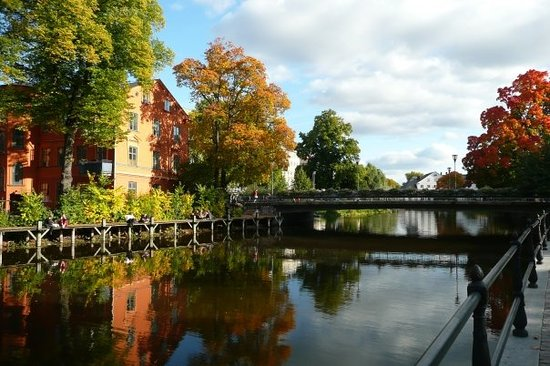

Stockholm
Willkommen in Stockholm
Goldgelbe Bürgerhäuser, die im klaren nordischen Licht warm leuchten, prachtvolle Renaissancegebäude, die von Wohlstand zeugen, schreiende Möwen, die über weißen Schärendampfern kreisen: Stockholm, strahlende Hauptstadt des Nordens, fasziniert – besonders durch das viele Wasser, das in der Sonne herrlich glitzert und im Winter zu Eis erstarrt. Ein Drittel der Fläche Stockholms ist Wasser, und das ist rein und von hervorragender Qualität. Hier können Sie mitten im Zentrum unbesorgt baden oder dicke Lachse angeln!
Das zweite Drittel der Stadtfläche ist grün. Abgesehen von vielen kleinen lauschigen Ecken mit Bäumen, Büschen und Rasen zieht sich ein riesiger, geschützter Nationalpark von 27 km2 mitten durch die Innenstadt, der Ekoparken. In welcher anderen Millionenmetropole gibt es das schon? Und die Grünanlagen sind stets gut besucht, im Sommer wie im Winter, denn die Stockholmer sind – wie die Schweden generell – sehr naturverbunden. Kommen die ersten Strahlen der Frühjahrssonne durch, hält die sonnenhungrigen Hauptstädter nach den langen Monaten der Dunkelheit nichts mehr in geschlossenen Räumen. Dann geht es raus ins Freie. Mit Mobiltelefon bewaffnet, sitzen sie verträumt mit geschlossenen Augen auf den Treppenstufen des Kungliga Dramatiska Teatern (Dramaten) und genießen bei einem Caffè Latte die Wärme und das Licht, auf die sie so lange verzichten mussten. Eilig werden Tische und Stühle selbst noch vor das winzigste Café gestellt und mit Wolldecken bestückt. Eine Vorsichtsmaßnahme, über die man sich wundern mag, scheinen doch die Stockholmer im Gegensatz zu Mitteleuropäern Temperaturen anders zu empfinden. Denn selbst bei objektiv niedrigen Frühjahrstemperaturen sind sie schon leicht bekleidet, während es Besucher aus südlicheren Gegenden noch ordentlich fröstelt.
Im Mai und Juni, wenn alles grünt und blüht, wird die Stadt richtig lebendig. Dann starten die Schärendampfer tutend in die neue Saison, Festivals und Marathonläufe locken Besucher an, mit Kind und Kegel zieht es die Stockholmer zum Picknicken hinaus. Sie tanken ordentlich Licht und Energie für die kalten, dunklen Wintertage, wenn die Straßen der Hauptstadt sich leeren, die Schiffe vertäut am Ufer liegen und es drinnen umso gemütlicher wird. Unzählige Lampen in den Fenstern leuchten warm ins Winterdunkel, Flammenschalen vor den Eingangstüren verbreiten heimelige Stimmung. So überstehen die Stockholmer die dunkle Jahreszeit.
Sehenswertes vor Ort
-
Storkyrkan
Die über 700 Jahre alte Domkirche spielte für Schwedens Staatskirche eine wichtige Rolle: Von hier aus verbreitete der große Reformator Olaus Petri (1493-1552) die lutherische Lehre über das Land. Die Fassade der Kirche, die 1306 geweiht wurde, ist im Stil des italienischen Barock gehalten. Die fünfschiffige Basilika mit dem 66 m hohen Turm wurde mehrfach umgebaut, deshalb lassen sich im Inneren verschiedene Epochen erkennen. Die ältesten Teile, die Deckengemälde in der Marienkapelle, stammen aus dem Mittelalter, die Krönungsstühle und die Kanzel über dem Grab von Olaus Petri aus dem späten Barock. Kostbare Kunstschätze sind auch der Silberaltar aus dem 17. Jh. und die große Gruppe Der heilige Georg mit dem Drachen (1489) aus Eichenholz und Elchgeweih, die der Lübecker Bildhauer Bernt Notke schuf. Das Gemälde Vädersolstavlan mit der ältesten Ansicht Stockholms stellt ein besonderes Lichtphänomen mit sechs funkelnden Sonnenringen dar, das 1535 über Stockholm zu sehen war. Die Storkyrkan war bis 1873 Krönungskirche der schwedischen Könige. 1976 heirateten hier König Carl XVI. Gustaf und Königin Silvia. 2010 wurde sie aus Anlass der Hochzeit von Kronprinzessin Victoria und Prinz Daniel aufwendig renoviert.
-
Vasamuseet
Im 17. Jh. war Schweden eine Großmacht im Ostseeraum. Während des Dreißigjährigen Kriegs (1618-48) gab König Gustav II. Adolf aus dem Herrschergeschlecht Wasa den Auftrag für den Bau eines stattlichen Kriegsschiffs. Mit diesem gigantischen Projekt hoffte der König die schwedischen Interessen gegen Polen wahren zu können, mit dem sich das Land seit 1600 im Krieg befand. Geplant war ein riesiges Schiff mit mehr als 64 Kanonen, 300 Soldaten und 145 Seeleuten an Bord. Darüber hinaus sollte die Vasa Macht demonstrieren und dem Feind ordentlich Furcht einflößen. Doch dazu kam es niemals. 1628 sank das 53 m hohe und 69 m lange königliche Kriegsschiff der Schweden wegen eines Konstruktionsfehlers bereits auf seiner Jungfernfahrt im Stockholmer Hafen. Erst 333 Jahre später, 1961, wurde das Schiff geborgen, sorgfältig konserviert, restauriert und ein eigenes Museum dafür gebaut. Ein besonderes Erlebnis ist das Vasa-Museum schon beim Eintreten: In einer riesigen Halle erhebt sich das imposante Kriegsschiff aus der Dunkelheit. Auf drei Galerien, die den Originalrumpf der Vasa umgeben, sind verschiedene Ausstellungen mit Exponaten zum Bau, zur Geschichte und zur Bergung des Schiffs sowie zum Leben an Bord zu sehen.
-
Riksdagshuset
Das monumentale Reichstagsgebäude und die Reichsbank auf Helgeandsholmen wurden 1905 bzw. 1906 eröffnet. Als die Schweden 1971 den Zweikammerreichstag abschafften und den Einkammerreichstag einführten, wurde ein neuer Plenarsaal notwendig. Während das Parlament für 12 Jahre ins Kulturhuset am Sergels torg umzog, fanden bis 1983 umfangreiche Umbaumaßnahmen statt. Reichstags- und Reichsbankgebäude wurden miteinander verbunden und vergrößert, im westlichen Teil des Komplexes liegt der Plenarsaal, dessen Wände und Stühle aus hellem Birkenholz gefertigt sind.
-
Katarina Kyrka
Jean de la Vallée entwarf diese Kirche mit klassizistischer Fassade, die 1695 vollendet war. Zwei Mal brannte sie ab (1723 und 1990). Nach dem letzten Brand achtete man auf einen strengen, originalgetreuen Wiederaufbau, bei dem auch die alten Bautechniken angewendet wurden. Kosten: fast 300 Mio. Kronen, die z.T. aus Spendengeldern finanziert wurden. 1995 wurde die neue Kirche geweiht. Auf dem Friedhof liegt die frühere schwedische Außenministerin Anna Lindh begraben, die 2003 bei einem Attentat im Kaufhaus NK ums Leben kam.
-
Östermalms Saluhall
Die Architekten Isak Gustaf Clason (1856-1930) und Kasper Salin (1856-1919) ließen sich beim Bau dieser rund 3000 m2 großen Markthalle von Backsteinarchitektur und neuartigen Gusseisenkonstruktionen inspirieren, die sie auf Reisen nach Deutschland, Frankreich und Italien gesehen hatten. In Anwesenheit König Oscars I. wurde die Halle, heute ein Spezialitätentempel, 1888 eröffnet.
-
Waldemarsudde
Direkt am Wasser, umgeben von einem großen Park, liegt diese stattliche Jugendstilvilla. Etwa 2500 Werke aus dem frühen 20. Jh. wie Gemälde, Skulpturen und Zeichnungen gehören zu der Sammlung des Prinzen Eugen, der selbst einer der führenden Landschaftsmaler Schwedens um 1900 war. Fast alle namhaften schwedischen Künstler seiner Zeit sind hier vertreten, etwa Karl Nordström, Ernst Josephsson oder auch Ivan Aguéli. Zu sehen sind auch einige der berühmtesten Bilder des Prinzen selbst.
-
Kungsträdgården
Der Renaissancepark aus dem 16. Jh. ist heute der älteste Park der Stadt und ein attraktiver Treffpunkt der Stockholmer. Hier kann man im Winter Schlittschuh laufen, im Sommer Eis essen, Schach spielen oder einfach mit einem Buch auf einer Bank sitzen.
-
Skansen
Für das größte Freilichtmuseum der Welt (gegründet 1891) wurden in ganz Schweden rund 150 typische Bauernhäuser und Herrenhöfe abgetragen und hier wieder aufgebaut. Eine besondere Attraktion ist das Wildgehege mit typisch nordischen Tieren.
Entdecken Sie die Schönheit Stockholms
      


